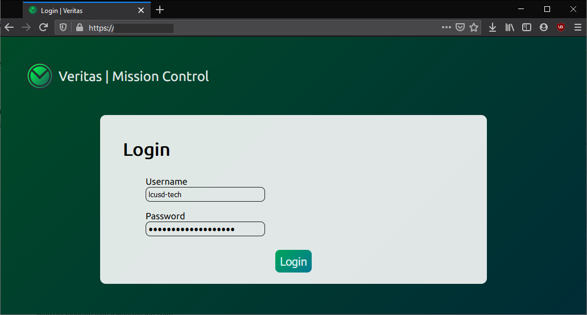

Aspys is an enterprise phishing detection software system. Through a universal whitelist/blacklist, refined email/website safety rating algorithms, and a simple but powerful end-user interface, Aspys makes phishing attempts against your organization easy to identify and streamlines the process of responding to them.
Every email sent to members of your organization is vetted upon being opened, displaying an indicator that varies in accordance with the email's safety, as shown below. This ensures that it's from a domain that your organization trusts (e.g. internal email domains or official noreply addresses), rather than a potentially fraudulent source.


Aspys offers an admin interface that allows for the customization of an organization-level domain/address whitelist and blacklist (see above), as well as other toggleable features.
This is an upcoming feature. More information will be available soon.
Website Safety-CheckingThis is an upcoming feature. More information will be available soon.
NOTE: Any potential fees or donations potentially requested for Aspys in the future are to offset its own server hosting costs and cover our club expenses.
Very. Login credentials are salted and hashed using SHA-256, and direct server access requires an RSA key.
What information is stored?
We only store as much information as is absolutely necessary to bring Aspys to your staff. We store public information like the name of your organization and its domains, as well as staff reports of phishing, and the domains/emails your organization chooses to whitelist or blacklist. Nothing of compromising value is stored on our server. That is, unless your IT department likes to use the same password for everything. 😉
Aspys is brought to you by the La Cañada High School Cybersecurity Club, a group of passionate students who are ineterested in software development, ethical hacking, privacy, and online safety. We work to keep LCUSD safe, and offer our services to other districts as well.